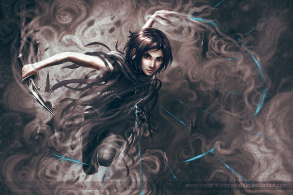

La màgia és un recurs molt utilitzat dins la literatura fantàstica que ofereix moltes possibilitats narratives i té un gran potencial imaginatiu. Però a l'hora d'escriure una narrativa fantàstica, cal plantejar-nos com podem evitar abusar d'aquest recurs com si es tractàs d'un comodí per arreglar de manera simple situacions complexes.
Evidentment, tot escriptor té llibertat absoluta amb les seves creacions, i el terme "llei" pot resultar conflictiu; però si la màgia és massa oportunista, o no suposa cap tipus d'esforç o de sacrifici, segurament estarem perdent grans oportunitats per que un personatge demostri el seu enginy, que estigui sotmès a proves de moral que descriuran la seva personalitat de forma més pragmàtica, o mostrar aspectes del conflicte i repercussions que no es tenien en compte...
Crear un món fantàstic no significa necessàriament que ens allunyem de la coherència (només un poquet), i presentar un univers que manté una estructura pot resultar molt interessant. Per això, també amb la màgia, podem plantejar-nos quines regles s'han de seguir per tal que el nostre univers resulti consistent.
Tot seguit, enunciam el que Brandon Sanderson denomina com les tres lleis de la màgia:
Primera llei de la màgia: |
La capacitat d'un autor per a resoldre un conflicte és directament proporcional a lo bé que el lector ha entès aquesta màgia. |
Segona llei de la màgia: |
Les limitacions han de ser majors que els poders. |
Tercera llei de la màgia: |
Amplia el que tens abans d'incloure res nou. |
|  |
|
Font de la imatge: intrepidati0n (Deviantart) |
Classes de l'autor Brandon Sanderson a Youtube
Pàgina literària de l'Ana González
Article més complet a la web cultural Fantífica